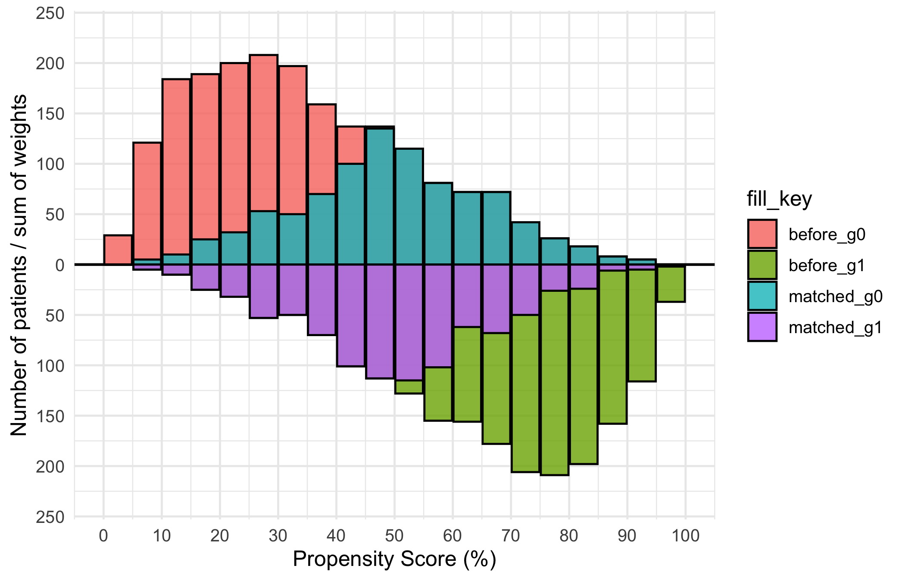
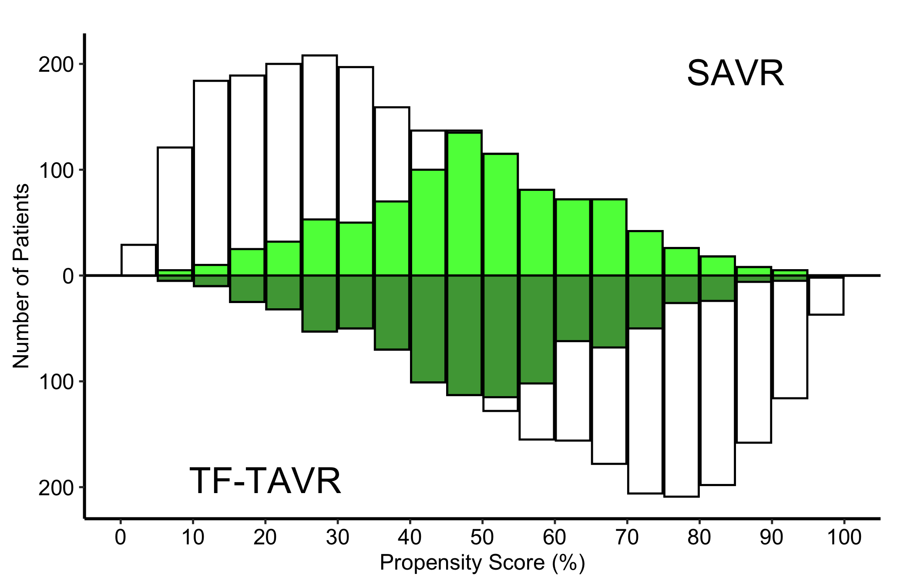
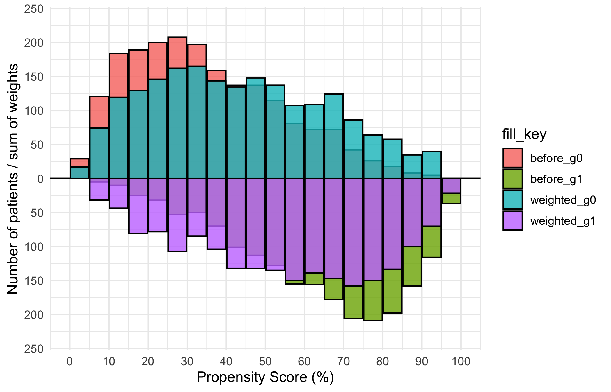
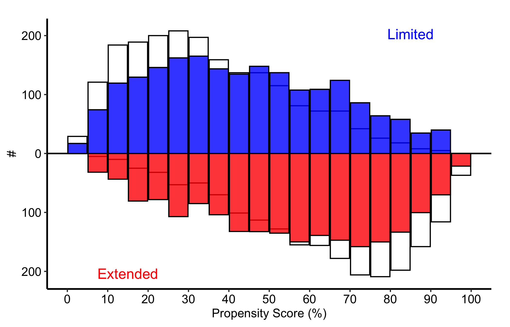
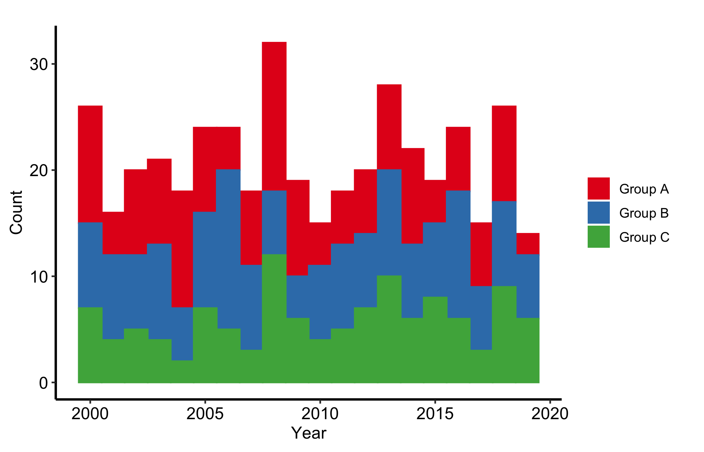
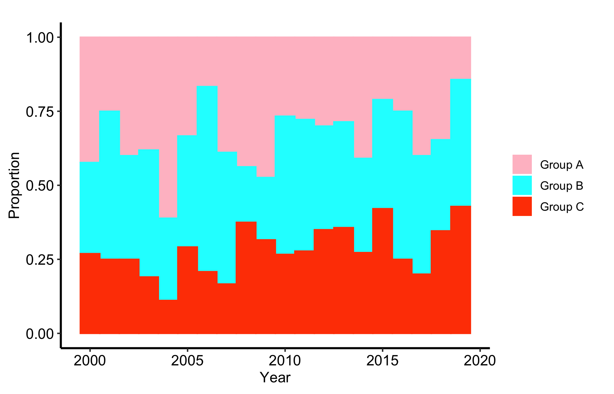

mirror_dta <- sample_mirror_histogram_data(n = 2000, separation = 1.5)
mh <- hv_mirror_hist(
data = mirror_dta,
score_col = "prob_t",
group_col = "tavr",
match_col = "match",
group_levels = c(0, 1),
group_labels = c("SAVR", "TF-TAVR"),
matched_value = 1,
score_multiplier = 100,
binwidth = 5
)8 Histogram plots
How well do treatment groups overlap after adjustment, and how does the mix of a cohort change over time? Histograms answer both questions when the bin counts and their denominator are made explicit.
8.1 When to use it
Two very different questions both end in a histogram. The first is a propensity-matching diagnostic: when we compare two treatment groups that were not randomized, we adjust for confounding by matching or weighting on a propensity score (the modelled probability of receiving the treatment). The mirrored histogram is how we show a reviewer that the adjustment worked, by putting one group’s score distribution above the axis and the other’s below it and letting the eye judge the overlap. The second question is compositional: how the make-up of a cohort shifts year over year. The stacked histogram answers that one, with each bar split into the categories that compose it.
This chapter covers both. The mirrored histogram (hv_mirror_hist()) is the diagnostic; the stacked histogram (hv_stacked()) is the trend. Both come from hvtiPlotR (Ehrlinger 2026) and follow the package pattern: a constructor prepares the data, plot() hands back a bare ggplot, and you dress it with colour, labels, and a theme.
8.2 The data it needs
hv_mirror_hist() accepts a data frame with a continuous propensity score, a binary group indicator, and a third column that controls the overlay. Two display modes follow from which third column you supply. In binary-match mode you pass match_col: the full bars show every observation before matching and a darker overlay shows the matched subset. In weighted IPTW mode (inverse probability of treatment weighting, the alternative to 1:1 matching) you pass weight_col: the overlay height is the sum of weights in each bin rather than a matched count.
sample_mirror_histogram_data() simulates 4,000 patients (2,000 per group) with a continuous propensity score (prob_t), a binary group indicator (tavr), and a match flag (match). score_multiplier = 100 puts the score on a 0 to 100 percent scale and binwidth = 5 sets 5-point bins.
8.3 Inspect it
Before plotting, check what the constructor kept. The class selects the plot method, meta records the columns and five-point bin width, and tables carries the balance diagnostics we will report with the figure.
class(mh)[1] "hv_mirror_hist" "hv_data" mh$meta[c("score_col", "group_col", "binwidth", "n_obs", "n_dropped")]$score_col
[1] "prob_t"
$group_col
[1] "tavr"
$binwidth
[1] 5
$n_obs
[1] 4000
$n_dropped
[1] 0mh$tables$diagnostics[c("group_counts_before", "group_counts_matched",
"smd_before", "smd_matched")]$group_counts_before
0 1
2000 2000
$group_counts_matched
0 1
919 919
$smd_before
[1] 1.563175
$smd_matched
[1] 0.027148688.4 Build it
The bare panel shows two mirrored bar charts, upper bars for the first group and lower for the second, with white fill and no scale, label, or theme yet.
p <- plot(mh, alpha = 0.8)
p
Now dress it. scale_fill_manual() maps the four internal fill levels (before_g0, matched_g0, before_g1, matched_g1) to white for the pre-match bars and two greens for the matched subsets. The annotations use y = Inf/-Inf with vjust to pin the group labels at the panel edges no matter the count scale, and scale_y_continuous(labels = abs) turns the internal negative counts of the lower group back into positive numbers. Put each label in the corner the bars leave empty: the upper group thins out to the right, so SAVR sits top-right, while the lower group thins to the left, so TF-TAVR sits bottom-left. An in-panel label belongs in dead space, never on top of the data it names. theme_hv_manuscript() sizes the text for a journal column; swap in theme_hv_poster() for a conference poster.
p +
ggplot2::scale_fill_manual(
values = c(
before_g0 = "white", matched_g0 = "green1",
before_g1 = "white", matched_g1 = "green4"
),
guide = "none"
) +
ggplot2::scale_x_continuous(
limits = c(0, 100),
breaks = seq(0, 100, 10)
) +
ggplot2::scale_y_continuous(labels = abs) +
ggplot2::annotate("text", x = 85, y = Inf, vjust = 2,
label = mh$meta$group_labels[1], size = 7) +
ggplot2::annotate("text", x = 20, y = -Inf, vjust = -1,
label = mh$meta$group_labels[2], size = 7) +
ggplot2::labs(x = "Propensity Score (%)", y = "Number of Patients") +
theme_hv_manuscript()
8.5 Read it
A mirrored matching histogram is read as a before-and-after, with the two halves of the figure carrying different jobs. Look for:
- Symmetric pre-match bars. The light bars are the full distributions. Two groups that need adjusting will sit at different ends of the score axis: the SAVR patients piled toward low scores, the TF-TAVR patients toward high. That separation is exactly the confounding the matching is meant to fix.
- The darker overlay narrowing in. The matched bars should occupy the region of score where the two groups overlap, and the upper and lower matched distributions should look like mirror images. That symmetry is the visual evidence that matching balanced the groups.
- A region with no overlay. Where one group has light bars but no dark ones, those patients had no match and were dropped. A lot of unmatched patients at the extremes is the cost of matching, and worth noting.
- Identical-looking panels before and after. If the matched overlay looks the same as the full bars, the
match_colmay not be mapping correctly.
The numbers behind the picture are stored on the object. The constructor records group counts and standardized mean differences (SMD, a scale-free measure of group imbalance) before and after matching:
mh$tables$diagnostics$smd_before[1] 1.563175mh$tables$diagnostics$smd_matched[1] 0.02714868mh$tables$diagnostics$group_counts_before
0 1
2000 2000 mh$tables$diagnostics$group_counts_matched
0 1
919 919 An SMD under about 0.1 after matching is the usual rule of thumb for adequate balance. Quote the matched SMD next to the figure so the reader does not have to take the symmetry on trust.
The x-axis is propensity score in percent and the y-axis is the number of patients in each five-point bin, with SAVR above zero and TF-TAVR below. Compare the dark matched overlay with the light full-cohort bars, then confirm the visual comparison with the SMD. This is a balance diagnostic. It does not estimate a treatment effect or establish that treatment caused an outcome difference.
8.6 Adapt it
8.6.1 Weighted IPTW mode (Limited vs. Extended)
When the analysis uses inverse probability of treatment weighting rather than 1:1 matching, pass weight_col instead of match_col. Each bin’s overlay height is now the sum of IPTW weights in that bin. add_weights = TRUE in the sample generator attaches an mt_wt column.
wt_dta <- sample_mirror_histogram_data(
n = 2000, separation = 1.5, add_weights = TRUE
)
mh_wt <- hv_mirror_hist(
data = wt_dta,
score_col = "prob_t",
group_col = "tavr",
group_levels = c(0, 1),
group_labels = c("Limited", "Extended"),
weight_col = "mt_wt",
score_multiplier = 100,
binwidth = 5
)
mh_wt$meta[c("score_col", "group_col", "binwidth", "n_obs", "n_dropped")]$score_col
[1] "prob_t"
$group_col
[1] "tavr"
$binwidth
[1] 5
$n_obs
[1] 4000
$n_dropped
[1] 0weight_total_by_group <- mh_wt$tables$diagnostics$effective_n_by_group
weight_total_by_group 0 1
2000 2000 mh_wt$tables$diagnostics[c("smd_before", "smd_weighted")]$smd_before
[1] 1.563175
$smd_weighted
[1] 0.5434922Despite the component name in hvtiPlotR 2.7.10, effective_n_by_group stores the sum of weights in each group. It is not the Kish effective sample size, \((\sum w)^2 / \sum w^2\). We give it the accurate local name weight_total_by_group; in this normalized example the totals are 2,000 and 2,000, the same as the raw group counts.
The bare weighted panel looks like the binary-match bare plot, but the overlay encodes IPTW weight sums, not counts. Read it the same way: balanced upper and lower overlay bars mean good weighting, while bars that stay heavily one-sided point to extreme weights you should investigate.
p_wt <- plot(mh_wt, alpha = 0.8)
p_wt
The IPTW variant uses blue and red for the Limited and Extended groups, with the group labels coloured to match. The axis and annotation pattern is the same as the binary-match version; swap in theme_hv_poster() when preparing the figure for a conference poster.
p_wt +
ggplot2::scale_fill_manual(
values = c(
before_g0 = "white", weighted_g0 = "blue",
before_g1 = "white", weighted_g1 = "red"
),
guide = "none"
) +
ggplot2::scale_x_continuous(
limits = c(0, 100),
breaks = seq(0, 100, 10)
) +
ggplot2::scale_y_continuous(labels = abs) +
ggplot2::annotate("text", x = 85, y = Inf, vjust = 2,
label = mh_wt$meta$group_labels[1], color = "blue", size = 5) +
ggplot2::annotate("text", x = 15, y = -Inf, vjust = -1,
label = mh_wt$meta$group_labels[2], color = "red", size = 5) +
ggplot2::labs(x = "Propensity Score (%)", y = "#") +
theme_hv_manuscript()
The weight totals describe the scale of the weighted histogram, while the weighted SMD evaluates balance:
mh_wt$tables$diagnostics$smd_weighted[1] 0.5434922weight_total_by_group 0 1
2000 2000 Here the x-axis remains propensity score, but the overlay height is the sum of IPTW weights within a bin, not a patient count. Compare the weighted upper and lower shapes and report the group weight totals with the weighted SMD. In this frozen example the weighted SMD is 0.543, still well above the 0.1 rule of thumb, so the weighting is inadequate; the figure is an example of diagnosing failed balance, not declaring success. Even adequate balance on the score would not by itself identify a causal treatment effect.
8.6.2 Stacked histogram: counts over time
The stacked histogram answers the compositional question: how the mix of a categorical variable shifts over time. hv_stacked() prepares the data and plot() hands back a bare ggplot. sample_stacked_histogram_data() generates a reproducible dataset with year and category columns.
hist_dta <- sample_stacked_histogram_data(n_years = 20, start_year = 2000,
n_categories = 3)
head(hist_dta) year category
1 2000 1
2 2000 1
3 2000 2
4 2000 2
5 2000 2
6 2000 1The default position = "stack" shows raw counts within each bin, so the height of a whole bar is the total volume in that year and each coloured segment is one category’s contribution. Use this when both the total and the mix matter: a growing bar with a shifting palette tells you the cohort is both larger and differently composed.
sh <- hv_stacked(hist_dta, x_col = "year", group_col = "category")
class(sh)[1] "hv_stacked" "hv_data" sh$meta[c("x_col", "group_col", "binwidth", "position", "n_obs", "n_groups")]$x_col
[1] "year"
$group_col
[1] "category"
$binwidth
[1] 1
$position
[1] "stack"
$n_obs
[1] 419
$n_groups
[1] 3p_count <- plot(sh)
p_count +
scale_fill_brewer(
palette = "Set1",
labels = c("1" = "Group A", "2" = "Group B", "3" = "Group C"),
name = "Category"
) +
scale_color_brewer(palette = "Set1", guide = "none") +
labs(x = "Year", y = "Count") +
theme_hv_manuscript() +
theme(legend.position = "right")
Year is on the x-axis and the y-axis is the number of observations in that year; each coloured segment contributes to the annual total. Compare both whole bar heights and the category segments, using all records in a year as the count denominator. The display describes cohort volume and composition. It cannot say why either changed.
8.6.3 Stacked histogram: proportions over time
position = "fill" rescales each bin so the bars sum to 1. Every bar is now full height and only the split between colours carries information, which makes the relative composition comparable across years without the total volume getting in the way. Reach for the fill version when the share is the story and the count is a distraction.
sh2 <- hv_stacked(hist_dta, x_col = "year", group_col = "category",
position = "fill")
sh2$meta[c("x_col", "group_col", "binwidth", "position", "n_obs", "n_groups")]$x_col
[1] "year"
$group_col
[1] "category"
$binwidth
[1] 1
$position
[1] "fill"
$n_obs
[1] 419
$n_groups
[1] 3p_fill <- plot(sh2)
p_fill +
scale_fill_manual(
values = c("1" = "pink", "2" = "cyan", "3" = "orangered"),
labels = c("1" = "Group A", "2" = "Group B", "3" = "Group C"),
name = "Category"
) +
scale_color_manual(
values = c("1" = "pink", "2" = "cyan", "3" = "orangered"),
guide = "none"
) +
labs(x = "Year", y = "Proportion") +
theme_hv_manuscript() +
theme(legend.position = "right")
The proportion version keeps year on the x-axis and divides every segment by that year’s total, so each bar sums to one. Compare category shares across years, but do not use this panel to compare annual volume or to attribute a change in case mix to an intervention.
8.7 Deliver it
Once the denominator and balance statistics are in the caption, take the panel to Finish and deliver the result for the manuscript, poster, or slide export path. Keep the matched or weighted SMD with the mirrored figure; the picture is not a substitute for that number.
8.8 Pitfalls
- Reading balance off the picture alone. A mirrored histogram that looks symmetric is reassuring, but the SMD is the number a reviewer trusts. Always report the matched or weighted SMD alongside the figure.
- Forgetting
labels = abson the y-axis. The lower group’s counts are stored negative so the bars mirror. Withoutscale_y_continuous(labels = abs)the axis shows negative patient counts, which confuses every reader. - Mapping the wrong overlay column. Pass
match_colfor matching andweight_colfor weighting, not both. The overlay means something different in each mode, and a count overlay on a weighted analysis (or vice versa) is simply wrong. - Confusing count and fill stacked bars. A fill histogram hides volume: a category can hold a steady share while its raw count collapses. If the absolute numbers matter, show the count version too, or you will mislead a reader about how much data sits behind a thin year.